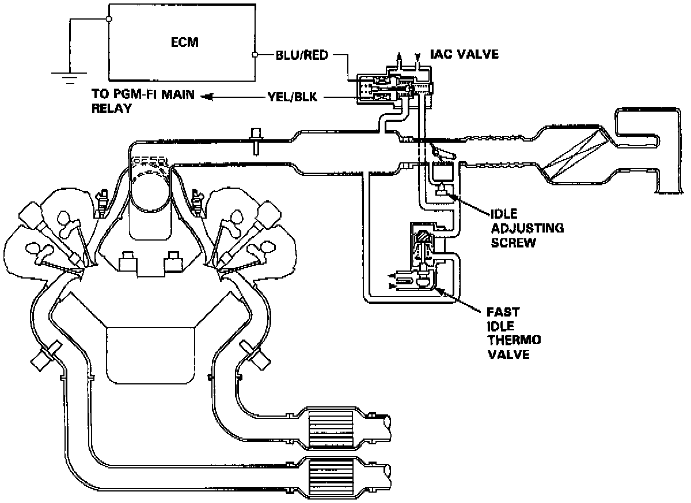
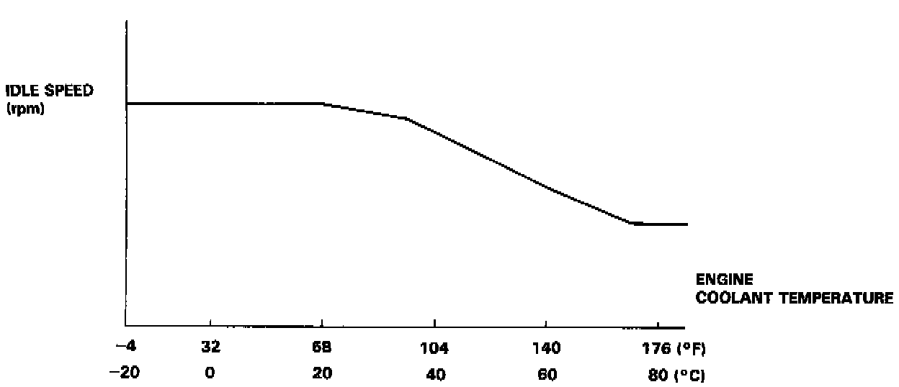

Idle Speed/Throttle Actuator - Electronic: Description and Operation
PURPOSE/OPERATION

The idle speed of the engine is controlled by the idle air control valve. The valve changes the amount of air bypassing into the intake manifold in response to electric current controlled by the engine control module. When the idle air control Valve is activated, the valve opens to maintain the proper idle speed.

After the engine starts, the idle air control valve opens for a certain time. The amount of air is increased to raise the idle speed about 150-300 rpm.
When the engine coolant temperature is low, the idle air control valve valve is opened to obtain the proper fast idle speed. The amount of bypassed air is thus controlled in relation to the engine coolant temperature.